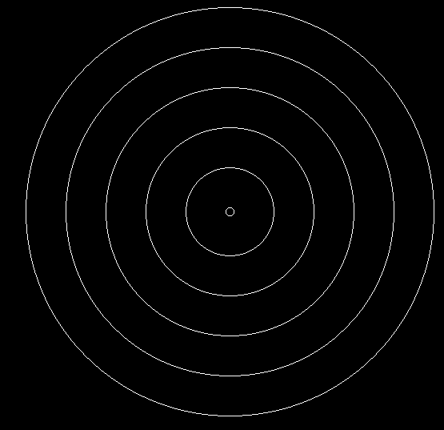
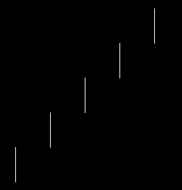
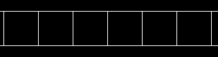
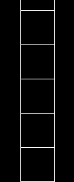
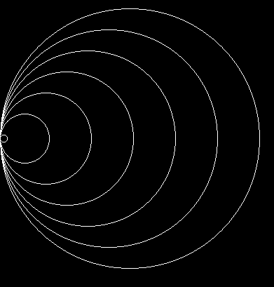
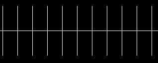
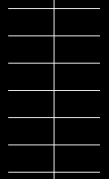

Выполните работу либо в Pixel либо в онлайн-платформе Khan Academy
--------------I вариант------------------
- При помощи любого цикла постройте фигуру 
- При помощи цикла for вывести на экран числа от -12 до 15.
- Вход: количество чисел n массива и сами n чисел, а также число a. Выход: количество элементов массива, которые кратны числу a.
--------------II вариант------------------
- При помощи любого цикла постройте фигуру 
- При помощи цикла for вывести все нечентные числа от -50 до 50.
- Вход: количество чисел n массива и сами n чисел, а также два числа a и b. Выход: элементы массива с номерами начиная с a и заканчивая b.
--------------III вариант------------------
- При помощи любого цикла постройте фигуру 
- Вход: количество чисел n массива и сами n чисел, а также число a. Выход: количество элементов массива, которые равны числу a.
- Ввести двумерный массив из n строк и m столбцов. Найти кол-во четных элементов во 2 строке. Вывести результат.
--------------IV вариант------------------
- При помощи любого цикла постройте фигуру 
- Вход: количество чисел n массива и сами n чисел, а также число a. Выход: массив, в котором каждый элемент заменен на остаток от деления его на число a.
- Ввести двумерный массив из n строк и m столбцов. Вычесть из 2-го стобца 1-й. Вывести массив после операции.
--------------V вариант------------------
- При помощи любого цикла постройте фигуру 
- Вход: количество чисел n массива и сами n чисел, а также числа a и b. Выход: разность элементов, имеющих номера a и b соответственно.
- Ввести двумерный массив из n строк и m столбцов. Вывести 2-ю строку.
--------------VI вариант------------------
- При помощи любого цикла постройте фигуру 
- Вход: количество чисел n массива и сами n чисел, а также два числа a и b. Выход: количество элементов массива, которые равны a+b.
- Ввести двумерный массив из n строк и m столбцов. Найти кол-во нулевых элементов в 1 строке. Вывести результат.
--------------VII вариант------------------
- При помощи любого цикла постройте фигуру 
- Вход: количество чисел n массива и сами n чисел, а также число a. Выход: массив, в котором каждый элемент заменен на частное от деления его на число a.
- Ввести двумерный массив из n строк и m столбцов. Прибавить к 1-му стобцу 3-й. Вывести массив после операции.
--------------VIII вариант------------------
- При помощи любого цикла постройте фигуру
- Вход: количество чисел n массива и сами n чисел, а также число a. Выход: количество элементов массива, которые не кратны числу a.
- Ввести двумерный массив из n строк и m столбцов. Обменять местами 4-й и 1 стобцы. Вывести полученный массив.
--------------IX вариант------------------
- При помощи любого цикла постройте фигуру
- Вход: количество чисел n массива и сами n чисел, а также два числа a и b. Выход: количество элементов массива, которые не равны a-b
- Ввести двумерный массив из n строк и m столбцов. Найти кол-во нечетных элементов в 3 строке. Вывести результат.
--------------X вариант------------------
- При помощи любого цикла постройте фигуру
- Вход: количество чисел n массива и сами n чисел, а также число a. Выход: количество элементов массива, которые не равны числу a.
- Ввести двумерный массив из n строк и m столбцов. Вывести сумму элементов 2-го столбца.
--------------XI вариант------------------
- При помощи любого цикла постройте фигуру
- Вход: количество чисел n массива и сами n чисел, а также два числа a и b. Выход: количество элементов массива, которые больше a, но меньше b.
- Ввести двумерный массив из n строк и m столбцов. Вывести сумму элементов 3-й строки.
--------------XII вариант------------------
- При помощи любого цикла постройте фигуру
- Вход: количество чисел n массива и сами n чисел, а также числа a и b. Выход: сумма элементов, имеющих номера a и b соответственно.
- Ввести двумерный массив из n строк и m столбцов. Найти кол-во ненулевых элементов в 1 строке. Вывести результат.